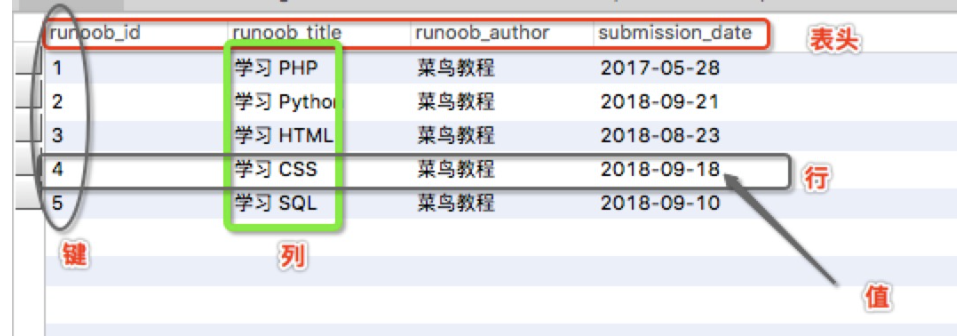
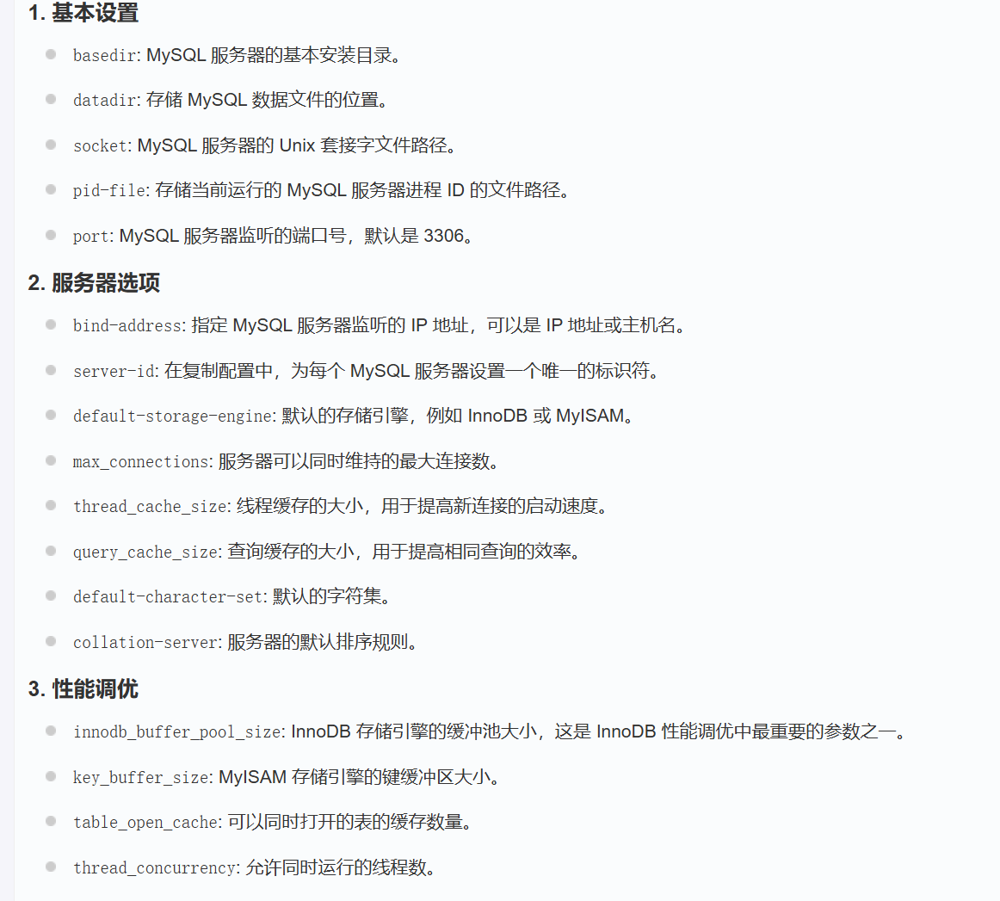
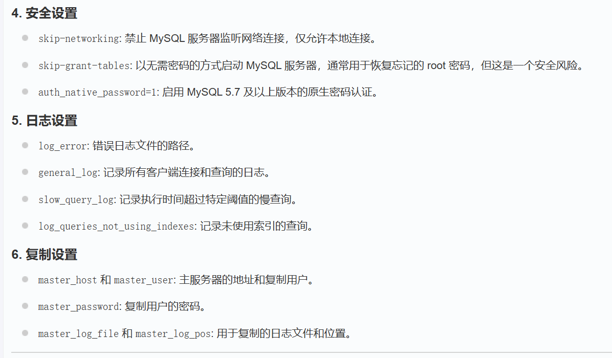

# MySQL
# 基本术语
列：具有相同数据类型的数据的集合
行：每一行用来描述某条记录的具体信息
冗余：存储两倍数据。冗余降低了性能，但提高了数据的安全性
主键：主键是唯一的，一个数据表只能由一个主键。可以用主键查询信息
外键： 一个表中的一列或多列，这些列的值必须与另一个表（通常称为主表）中的主键或唯一键的值相匹配，或者为空值。包含外键的表称为从表（或子表），被引用的表称为主表（或父表）。
复合键：复合键（组合键）将多个列组成一个索引键，一般用于复合索引
索引：使用索引可快速访问数据表中的特定信息，索引是数据库中由一列或多列的值进行排序的结构。相当于书籍的目录。
参照完整性：参照的完整性要求关系中不允许引入不存在的实体。
值：行的具体信息，每个值必须与该列的数据类型相同
键：键的值在当前列中具有唯一性

# 管理
Windows:
启动 / 关闭
去找 services.msc
或者使用命令 net start/stop mysql
Linux:
# 启动 / 关闭
sudo systemctl start/stop mysql
在一些老旧的版本：
sudo service mysql start/stop
# 重启
sudo systemctl restart mysql
或者
sudo service mysql restart
# 检查状态
sudo systemctl status mysql
或者
sudo service mysql status
# 用户设置
# 创建
CREATE USER 'username'@'host' IDENTIFIED BY 'password';
username：用户名。host：指定用户可以从哪些主机连接。例如，localhost仅允许本地连接，%允许从任何主机连接。password：用户的密码。
例如：
CREATE USER 'john'@'localhost' IDENTIFIED BY 'password123';
# 删除
DROP USER 'username'@'host';
# 修改密码
ALTER USER 'username'@'host' IDENTIFIED BY 'new_password';
# 修改用户主机
-- 删除旧用户
DROP USER 'john'@'localhost';
-- 重新创建用户并指定新的主机
CREATE USER 'john'@'%' IDENTIFIED BY 'password123';
# 授权
GRANT privileges ON database_name.* TO 'username'@'host';
privileges：所需的权限，如ALL PRIVILEGES、SELECT、INSERT、UPDATE、DELETE等。database_name.*：表示对某个数据库或表授予权限。database_name.*表示对整个数据库的所有表授予权限，database_name.table_name表示对指定的表授予权限。TO 'username'@'host'：指定授予权限的用户和主机。
例如：
GRANT ALL PRIVILEGES ON test_db.* TO 'john'@'localhost';
# 授权或者撤权都要刷新才能生效：
FLUSH PRIVILEGES;
# 查权
SHOW GRANTS FOR 'username'@'host';
# 撤权
REVOKE ALL PRIVILEGES ON test_db.* FROM 'john'@'localhost';
# 创建并指定权限
CREATE USER 'john'@'localhost' IDENTIFIED BY 'password123' WITH GRANT OPTION; //加上这句
GRANT ALL PRIVILEGES ON test_db.* TO 'john'@'localhost';
# /etc/my.cnf 文件配置


# 管理命令
1.use 数据库名
使用该命令后所有 Mysql 命令都只针对该数据库
2.SHOW DATABASES
显示所有数据库列表
3.SHOW TABLES
显示某数据库的所有表（所以要先 use）
4.SHOW COLUMNS FROM 数据表
显示数据表的属性，属性类型，主键信息 ，是否为 NULL，默认值等其 他信息
5.SHOW INDEX FROM 数据表
显示索引，包括主键
6.SHOW TABLE STATUS [FROM db_name] [LIKE 'pattern'] \G
该命令将输出 Mysql 数据库管理系统的性能及统计信息。
例如：
SHOW TABLE STATUS FROM 数据库名;
SHOW TABLE STATUS from RUNOOB LIKE 'runoob%';
#显示以runoob%开头的表的信息
SHOW TABLE STATUS from RUNOOB LIKE 'runoob%'\G;
#\G，查询结果按列打印
# PHP 语法
# 1. 连接
<?php | |
$servername = "localhost"; | |
$username = "your_username"; | |
$password = "your_password"; | |
$database = "your_database"; | |
// 创建连接 | |
$conn = mysqli_connect($servername, $username, $password, $database); | |
// 检测连接，可见 mysqli_connect 是有返回值的 | |
if (!$conn) { | |
die("连接失败: " . mysqli_connect_error()); | |
} | |
echo "连接成功"; | |
?> |
其中的函数格式和部分功能：
函数定义：mysqli_function(value,value,...); |
mysqli_connect($connect); | |
mysqli_query($connect,"SQL 语句"); | |
mysqli_fetch_array() | |
mysqli_close() | |
// 都是内置的函数 |
# 二进制连接
mysql -u your_username -p | |
//-u 指定用户名，-p 要输入密码 |
# 使用脚本连接
mysqli_connect(host, username, password, dbname,port, socket); | |
// 都是可选参数，没有就不写。其中只有 port 是 int，其他都是字符串 | |
/* 套接字（socket）是一种进程间通信机制。当脚本就在服务器上时，使用这个 | |
不用经过网络套接字（通过 TCP/IP 协议），而是使用 UNIX 套接字（所以在 windows 系统上，这个参数会被忽略）。*/ | |
其实就是不用网络，在本机进程间通信连接 | |
注意：这是个指向.socket文件的路径 | |
所以，如果用这玩意儿，就不用指定port了，可以直接设置为null |
在 PHP8.0 以上，可以使用命名参数来保证正确传参，参数名就是上面那几个
mysqli_close () 函数来断开与 MySQL 数据库的链接。
函数定义：bool mysqli_close ( mysqli $link ) |
该函数只有一个参数为 mysqli_connect () 函数创建连接成功后返回的 MySQL 连接标识符（mysqli_connect 的返回值）。
例如：
$link = mysqli_connect("localhost", "username", "password", "database"); | |
if (!$link) { | |
die("连接失败: ". mysqli_connect_error()); | |
} | |
// 执行一些数据库操作 | |
// 显式关闭连接 | |
mysqli_close($link); | |
// 不给参数，就关闭最近打开的一个 |
# 2. 退出
EXIT; 或者 QUIT; 或者快捷键 ctrl +D
# 操作数据库
# 0. 查看已有数据库
SHOW DATABASES;
# 1. 创建
CREATE DATABASE [IF NOT EXISTS] 数据库名;
如果要指定选项，可以加上其他参数：
CREATE DATABASE mydatabase
CHARACTER SET utf8mb4
COLLATE utf8mb4_general_ci;
指定字符集和排列顺序。
如果不加IF NOT EXISTS并且存在该数据库，会报错
# 使用 mysqladmin
注：mysqladmin 是个命令
mysqladmin -u your_username -p create your_database | |
如果要指定选项，可以加上特定参数： | |
mysqladmin -u your_username -p create your_database \ | |
--default-character-set=utf8mb4 \ | |
--default-collation=utf8mb4_general_ci | |
作用同上 |
如果是普通用户，可能要特定权限
这个命令行可以使用 SQL 的命令：
mysqladmin -u your_username -p your_command
例如：
mysqladmin -u your_username -p status
# 使用 PHP 脚本
mysqli_query(connection,query,resultmode);
也有返回值,也是用于判断是否成功
除了最后一个，都是必须项。
connection：就是 $connt，也就是 mysqli_connet (...)
query：查询字符串，也就是 SQL 语句。
resultmode：这是常量，只能填以下两个之一：
MYSQLI_USE_RESULT （检索大量数据时用）
MYSQLI_STORE_RESULT （默认）
# 2. 删除
DROP DATABASE [IF EXISTS] <database_name>;
同样，如果不加IF EXISTS，删除不存在的，会报错
// 这是不可逆的
# 使用 mysqladmin
mysqladmin -u your_username -p drop your_database |
# 使用 PHP 脚本
还是用：
mysqli_query(connection,query,resultmode); |
显而易见：
此时的 $query 就是 DROP DATABASE [IF EXISTS] <database_name>;
# 3. 选择
# 使用命令行
mysql -u root -p; //执行完这个，就会进入mysql提示符 | |
use <database name>; | |
....; //其他操作命令 |
use 语句可以换成命令中的 - D 参数，变成：
mysql -u your_username -p -D your_database |
# 使用 php 脚本
mysqli_select_db(connection,dbname); | |
// 都是必填项 |
# 一个实例
<?php
$dbhost = 'localhost'; // mysql服务器主机地址
$dbuser = 'root'; // mysql用户名
$dbpass = '123456'; // mysql用户名密码
$conn = mysqli_connect($dbhost, $dbuser, $dbpass);
if(! $conn )
{
die('连接失败: ' . mysqli_error($conn));
}
echo '连接成功';
mysqli_select_db($conn, 'RUNOOB' );
mysqli_close($conn);
?>
# 数据类型
# 数值类型
几个不太一样的地方：
int 分为：tinyint（1Bytes）,smallint（2）,mediumint（3）,int（4）,bigint（8）
多了一个
DECIMAL 类型，用于表示小数：
对于 DECIMAL (M,D) ，如果 M>D，为 M+2 否则为 D+2
# 日期和时间类型
DATE （3）：YYYY-MM-DD
TIME（3）：HH:MM:SS
YEAR（1）：YYYY
DATATIME（8）：YYYY-MM-DD hh:mm:ss
TIMESTAMP（4）：同上 // 这就是时间戳
# 字符串类型
| 类型 | 大小 | 用途 |
|---|---|---|
| CHAR | 0-255 bytes | 定长字符串 |
| VARCHAR | 0-65535 bytes | 变长字符串 |
| TINYBLOB | 0-255 bytes | 不超过 255 个字符的二进制字符串 |
| TINYTEXT | 0-255 bytes | 短文本字符串 |
| BLOB | 0-65 535 bytes | 二进制形式的长文本数据 |
| TEXT | 0-65 535 bytes | 长文本数据 |
| MEDIUMBLOB | 0-16 777 215 bytes | 二进制形式的中等长度文本数据 |
| MEDIUMTEXT | 0-16 777 215 bytes | 中等长度文本数据 |
| LONGBLOB | 0-4 294 967 295 bytes | 二进制形式的极大文本数据 |
| LONGTEXT | 0-4 294 967 295 bytes | 极大文本数据 |
# others
# 枚举与集合类型
- ENUM: 枚举类型，用于存储单一值，可以选择一个预定义的集合。
- SET: 集合类型，用于存储多个值，可以选择多个预定义的集合。
# 空间数据类型
GEOMETRY, POINT, LINESTRING, POLYGON, MULTIPOINT, MULTILINESTRING, MULTIPOLYGON, GEOMETRYCOLLECTION: 用于存储空间数据（地理信息、几何图形等）。
# 使用数据库
# 0. 查看已有数据表 / 列
SHOW TABLES;
SHOW TABLE STATUS; //这是看表类型（ENGING等）
SHOW COLUMNS FROM table_name; //这是看表结构，不是数据
不加 S 的话，要写具体名称或者模糊匹配。 \G 以竖排显示
# 1. 创建数据表
必须提供：
- 表名
- 表字段名
- 定义每个表字段的数据类型
SQL 语法：
CREATE TABLE table_name (
column1 datatype,
column2 datatype,
...
);
//column是列名
可以加子句：
CREATE TABLE mytable (
id INT PRIMARY KEY,
name VARCHAR(50)
) CHARACTER SET utf8mb4 COLLATE utf8mb4_general_ci;
# SQL 实例
CREATE TABLE users (
id INT AUTO_INCREMENT PRIMARY KEY,
username VARCHAR(50) NOT NULL,
email VARCHAR(100) NOT NULL,
birthdate DATE,
is_active BOOLEAN DEFAULT TRUE
);
//AUTO_INCREMENT PRIMARY KEY,设定该列自增长(1,2,3...)，且是主键
（这两者一般同时出现）
注意：每个表只能有一个 AUTO_INCREMENT 列，必须为整数类型
即使删除了表中最大自增值的记录，下一次插入新记录时，自增值仍然会继续
递增，不会复用已删除的自增值。
起始值默认为1，但可以用`ALTER TABLE users AUTO_INCREMENT = 100;`改
//NOT NULL，这项必填
//DEFAULT TRUE，设定默认值为TRUE
以上三行都是附加的属性
# 通过命令行
mysql -u root -p -D <database name> | |
//接下来进了SQL命令行，当然就是写SQL语句。 |
注意：mySQL 命令行中，回车不是结束，
;才是。因此，写不下时可以随意换行
# 通过 PHP 脚本
还是 mysqli_query(connection,query,resultmode);
# 2. 删除数据表 [数据]
DROP TABLE [IF EXISTS] table_name; //这是直接删表
TRUNCATE TABLE table_name; //这是删表数据（保留结构，数据全删）
DELETE FROM table_name WHERE condition; //这也是删表数据（保留结构，加条件可不全删）
注意：TURUNCATE是直接释放数据页的空间，没有详细的删除的日志，因此不能触发任何触发器，也不能事务回滚
但是更加高效，delete是逐行删除，会触发，能回滚，但更低效
使用命令行和 PHP 脚本，同上
# 3. 插入表数据
INSERT INTO table_name (column1, column2, column3, ...)
VALUES (value1, value2, value3, ...);
//value 若是字符型，要写成 'value'
// 如果插入所有列，可以省略列名。此时第一个要写 NULL, 因为它是那个自增长列的占位符。当然也可以第一行写 0（接下来同理），要不然会变来变去。
# 插入多行
实例：
INSERT INTO users (username, email, birthdate, is_active)
VALUES
('test1', 'test1@runoob.com', '1985-07-10', true),
('test2', 'test2@runoob.com', '1988-11-25', false),
('test3', 'test3@runoob.com', '1993-05-03', true);
使用命令行和 PHP 脚本，同上，这之后的也都是同上
但是，如果插入的数据中有中文，必须先执行
mysqli_query($conn , "set names utf8"); | |
或者使用PHP函数 | |
mysqli_set_charset($conn, "utf8"); | |
// 它会同时设置： | |
character_set_client：客户端发送数据时使用的字符编码。 | |
character_set_results：服务器返回结果集时使用的字符编码。 | |
character_set_connection：连接层使用的字符编码。 |
# 获取自增的值
$last_id=mysqli_insert_id($conn) |
# 4. 修改表数据
进行重要的结构修改时，建议先备份数据
UPDATE table_name
SET column1 = value1, column2 = value2, ...
WHERE condition; //where子句可选，没有就会更新所有行
# 替换某个字段中的某个字符
当我们需要将字段中的特定字符串批量修改为其他字符串时，可使用以下操作：
UPDATE table_name SET field=REPLACE(field, 'old-string', 'new-string') [WHERE Clause];
# 5. 修改表名 / 结构 / 类型
# 添加列 / 主键
ALTER TABLE table_name
ADD COLUMN new_column_name datatype;
以及
ALTER TABLE table_name
ADD PRIMARY KEY (column_name);
以及
ALTER TABLE testalter_tbl ENGINE = MYISAM;
# 添加外键
ALTER TABLE child_table
ADD CONSTRAINT fk_name
FOREIGN KEY (column_name)
REFERENCES parent_table (column_name);
# 修改数据类型
ALTER TABLE TABLE_NAME
MODIFY COLUMN column_name new_datatype;
# 修改列 / 表名
ALTER TABLE table_name
CHANGE COLUMN old_column_name new_column_name datatype;
-- 可以顺手改数据类型
以及
ALTER TABLE old_table_name
RENAME TO new_table_name;
# 删除列
ALTER TABLE table_name
DROP COLUMN column_name;
# 修改字段类型及名称
可以使用上面的 CHANGE 子句
也可以用 MODIFY 子句
ALTER TABLE testalter_tbl MODIFY c CHAR(10);
等同于
ALTER TABLE testalter_tbl CHANGE c c CHAR(10);
只不过MODIFY子句不能顺便改名
这两者修改时都可以附带上 NOT NULL，DEFAULT 等
例如：
ALTER TABLE testalter_tbl MODIFY j BIGINT NOT NULL DEFAULT 100;
# 修改 / 删除默认值等
ALTER TABLE testalter_tbl ALTER i SET DEFAULT 1000;
以及
ALTER TABLE testalter_tbl ALTER i DROP DEFAULT/PRIMARY KEY;
# 6. 读取 / 查询表数据
# 读取
select * from 数据表名; //可以多表`,`分开
# 查询
SELECT column1, column2, ...
FROM table_name //可以多表`,`分开
[WHERE condition]
[ORDER BY column_name [ASC | DESC]]
[LIMIT N][offset M];
- 使用
*表示选择所有列。 WHERE condition是一个可选的子句，用于指定过滤条件，只返回符合条件的行。ORDER BY column_name [ASC | DESC]可选子句，指定结果集的排序顺序，默认升序（ASC）。LIMIT N可选子句，返回 N 条记录offset N可选子句，跳过 M 条记录
limit M offset N;
相当于
limit N,M;
# 获取数据
# 1. 使用 mysqli_fetch_array MYSQLI_ASSOC
按行获取，一次只从返回的数据中获取一行
MYSQLI_ASSOC 是返回关联数组
也可以用 MYSQLI_NUM ，返回数字数组。区别不大，只不过是把下面的 row [0]
... | |
$sql = "SELECT id, name, age FROM users"; | |
$result = mysqli_query($conn, $sql); | |
if (mysqli_num_rows($result) > 0) { | |
// 使用 mysqli_fetch_array 结合 MYSQLI_ASSOC 获取数据 | |
while ($row = mysqli_fetch_array($result, MYSQLI_ASSOC)) { | |
echo "ID: ". $row['id']. ", 姓名: ". $row['name']. ", 年龄: ". $row['age']. "<br>"; | |
}// 没行了会返回 false | |
} else { | |
echo "没有找到记录"; | |
} | |
... |
# 2. 使用 mysqli_fetch_assoc
没行返回 null，但是也可以结束 while
mysqli_fetch_assoc($result) , 返回的直接是关联数组
相当于
mysqli_fetch_array($result,MYSQLI_ASSOC)
# 3. 内存释放
... | |
$retval = mysqli_query( $conn, $sql ); | |
... | |
mysqli_free_result($retval); |
# where 子句
类似于 if 语句，判断真假，使用 AND 和 OR 组合， LIKE 模糊匹配
一般的：
...WHERE username = 'test';
...salary >= 50000;
对于日期时间类型：
...WHERE order_date BETWEEN '2023-01-01' AND '2023-12-31';
对于可空的：
...WHERE email IS [NOT] NULL;
默认的字符串比较不区分大小写（非 like 子句），如果要，写成：
...WHERE BINARY...
# LIKE 子句
代替等号用于 where 子句（或者 having 子句）
可使用的通配符包括：
% 表示没有或者有任意个任意字符
_ 表示一个任意字符
其他匹配方式：
[] / [^] 类似正则表达式，查询内容包含通配符时，可以用这个括起
可以组合使用，比如：a% o_
like 子句是否区分大小写取决于字符集
不区分是：
SELECT * FROM employees WHERE last_name LIKE 'smi%' COLLATE utf8mb4_general_ci;
# 合并查询数据（UNION）
SELECT column1, column2, ... FROM table1 WHERE condition1
UNION //加中间就行，可以叠叠乐
SELECT column1, column2, ... FROM table2 WHERE condition2
[ORDER BY column1, column2, ...]; //可选，排序合并后的数据
注意：1. 会自动去除重复行（使用 UNION ALL 则不会，性能还会更好）。
2. 每个 SELECT 语句的列数和对应位置的数据类型必须相同（即使来自不同表）。
# 排序
ORDER BY 子句，排序查询后的数据
SELECT column1, column2, ...
FROM table_name
ORDER BY column1 [ASC | DESC], column2 [ASC | DESC], ...;
默认 ASC（升序）。DESC 是降序
像上面那个多列排序，就是先按 column1, 再按 column2
可以不用列名而用数字表示列的位置，例如：
ORDER BY 3 DESC, 1 ASC;
8.0 以上的版本，末尾有可选参数：
NULLS FIRST 或 NULLS LAST ，表示排序时 NULL 的位置
注意：
如果字符集是 utf-8，而不是 GBK，排序时要先转码：
SELECT * FROM runoob_tbl ORDER BY CONVERT(runoob_title using gbk);
# 分组
GROUP BY 语句根据一个或多个列对结果集进行分组。
在分组的列上我们可以使用 COUNT, SUM, AVG, 等函数。
SELECT column1, column2, aggregate_function(column3)
FROM TABLE_NAME
WHERE condition
GROUP BY column1, column2;
# 实例
SELECT customer_id, SUM(order_amount) AS total_amount
FROM orders
GROUP BY customer_id;
//计算每个客户的订单总金额
GROUP BY子句通常与聚合函数一起使用，因为分组后需要对每个组进行聚合操作。SELECT子句中的列通常要么是分组列（GROUP BY使用的列），要么是聚合函数的参数。- 可以使用多个列进行分组，只需在
GROUP BY子句中用逗号分隔列名即可。
聚合函数：
如 SUM 、 AVG 、 COUNT 、 MIN 、 MAX 等，用于对每个分组的数据进行汇总计算。
# 使用 WITH ROLLUP
可选子句，实现在分组统计数据基础上再进行相同的统计
对比一下：
以及
为了避免 NULL, 可以使用
select coalesce(a,b,c); //按顺序判断是否为NULL,返回遇到的第一个非NULL值。（全NULL就返回NULL）于是可改成：
SELECT coalesce(name, '总数'), SUM(signin) as signin_count FROM employee_tbl GROUP BY name WITH ROLLUP;
# 多表查询（JOIN）
- INNER JOIN（内连接，或等值连接）：获取两个表中字段匹配关系的记录，可以简写为 JOIN。
- **LEFT JOIN（左连接）：** 获取左表所有记录，即使右表没有对应匹配的记录。
- RIGHT JOIN（右连接）： 与 LEFT JOIN 相反，用于获取右表所有记录，即使左表没有对应匹配的记录。
SELECT column1, column2, ...
FROM table1
INNER JOIN table2
ON table1.column_name = table2.column_name;
//只返回两表中column_name内容相同的行
//SELECT中的列也要写成类似于table.column的形式，不必包含ON使用的那列
可以叠叠乐：
SELECT orders.order_id, customers.customer_name, products.product_name
FROM orders
INNER JOIN customers ON orders.customer_id = customers.customer_id
INNER JOIN order_items ON orders.order_id = order_items.order_id
INNER JOIN products ON order_items.product_id = products.product_id;
//此时只有在四个表的所选列中都存在的才会返回对应的SELECT
LEFT/RIGHT JOIN
以 LEFT JOIN 为例，RIGHT JOIN 反之
SELECT column1, column2, ...
FROM table1
LEFT JOIN table2
ON table1.column_name = table2.column_name;
[WHERE 条件]
//返回左表中所有行的情况下。当右表中没有匹配的行时，相关列将显示为 NULL。
# NULL 值处理
WHERE 子句
is (not) null
ORDER BY 子句:
NULLS FIRST/LAST
# 用于比较
SELECT * FROM employees WHERE commission <=> NULL;
`<=>`是比较表达式是否相等的特殊操作符，可以直接替换`=`
都是NULL就返回TRUE
注意：回值始终是NULL
# 聚合函数
会被忽略
如果想指定为特定值，可以套个 COALESCE 或者它的下位 IFNULL（只接受俩参数）
例如： AVG(COALESCE(salary, 0)) 或者 AVG(IFNULL(salary, 0))
# 正则表达式
模式 描述 ^ 匹配输入字符串的开始位置。如果设置了 RegExp 对象的 Multiline 属性，^ 也匹配 '\n' 或 '\r' 之后的位置。 $ 匹配输入字符串的结束位置。如果设置了 RegExp 对象的 Multiline 属性，$ 也匹配 '\n' 或 '\r' 之前的位置。 . 匹配除 "\n" 之外的任何单个字符。要匹配包括 '\n' 在内的任何字符，请使用像 '[.\n]' 的模式。 [...] 字符集合。匹配所包含的任意一个字符。例如， '[abc]' 可以匹配 "plain" 中的 'a'。 [^...] 负值字符集合。匹配未包含的任意字符。例如， '[^abc]' 可以匹配 "plain" 中的 'p'。 p1|p2|p3 匹配 p1 或 p2 或 p3。例如，'z|food' 能匹配 "z" 或 "food"。'(z|f) ood' 则匹配 "zood" 或 "food"。 * 匹配前面的子表达式零次或多次。例如，zo* 能匹配 "z" 以及 "zoo"。* 等价于 {0,}。 + 匹配前面的子表达式一次或多次。例如，'zo+' 能匹配 "zo" 以及 "zoo"，但不能匹配 "z"。+ 等价于 {1,}。 n 是一个非负整数。匹配确定的 n 次。例如，'o {2}' 不能匹配 "Bob" 中的 'o'，但是能匹配 "food" 中的两个 o。 m 和 n 均为非负整数，其中 n <= m。最少匹配 n 次且最多匹配 m 次。 # 正则表达式匹配的字符类
.：匹配任意单个字符。^：匹配字符串的开始。$：匹配字符串的结束。*：匹配零个或多个前面的元素。+：匹配一个或多个前面的元素。?：匹配零个或一个前面的元素。[abc]：匹配字符集中的任意一个字符。[^abc]：匹配除了字符集中的任意一个字符以外的字符。[a-z]：匹配范围内的任意一个小写字母。[0-9]：匹配一个数字字符。\w：匹配一个字母数字字符（包括下划线）。\s：匹配一个空白字符。
# REGEXP/RLIKE
这两者等同
SELECT column1, column2, ...
FROM table_name
WHERE column_name REGEXP [BINARY] 'pattern';
//'pattern'是一个正则表达式模式,例如：'^[aeiou]|ok$'，'item[0-9]+'等
//使用BINARY关键字，匹配区分大小写
# 事务
要么全部执行，要么都不执行
用来管理 insert、update、delete 语句
# 控制语句
- BEGIN 或 START TRANSACTION 显式地开启一个事务；
- COMMIT/COMMIT WORK，二者等价。提交事务，此时才真正修改，不可逆；
- ROLLBACK/ROLLBACK WORK，二者等价。结束用户的事务，并撤销正在进行的所有未提交的修改；
- SAVEPOINT identifier，在事务中创建保存点，可以有多个；
- RELEASE SAVEPOINT identifier 删除保存点，不存在时抛出异常；
- ROLLBACK TO identifier 把事务回滚到保存点；
- SET TRANSACTION 用来设置事务的隔离级别。
- SET AUTOCOMMIT=0 禁止自动提交
- SET AUTOCOMMIT=1 开启自动提交
实例：
START TRANSACTION;
UPDATE accounts SET balance = balance - 100 WHERE user_id = 1;
UPDATE accounts SET balance = balance + 100 WHERE user_id = 2;
-- 判断是否要提交还是回滚
IF (条件) THEN
COMMIT; -- 提交事务
ELSE
ROLLBACK; -- 回滚事务
END IF;
# 隔离级别
InnoDB 存储引擎提供事务的隔离级别有 READ UNCOMMITTED、READ COMMITTED、REPEATABLE READ 和 SERIALIZABLE。
# 读未提交
READ UNCOMMITTED
可以读取到其他事务尚未提交的数据，最低级别
可能脏读（被读取的事务最终回滚导致所读的数据无效）
# 读已提交
READ COMMITTED
只能读取到其他事务已经提交的数据
不会脏读
但由于不可重复读，可能导致多次读取同一数据的值不一样
# 可重复读
REPEATABLE READ
多次读取同一数据始终保持一致 ，被读事务进行的修改和提交不会改变读取结果
不会脏读
可能幻读
原理：
可重复读默认对读取行加一个快照，此后该事务读取该行都是用快照（可以改为加共享锁）
所以不脏读。
但是如果其他事务增加满足查询条件的行，查询会多出一条
导致幻读。
// 非串行化都可能幻读
// 行级锁分两种：共享锁（S 锁），其他事务可读不写；排他锁（X 锁），其他事务不
读不写。一行同时只能一个锁。带有锁的行被其他事务读取时，必须等待其释放（上锁
的事务提交或回滚）
可以自行加锁：
SELECT price FROM products WHERE id = 1 LOCK IN SHARE MODE; -- 加共享锁
SELECT price FROM products WHERE id = 1 FOR UPDATE; -- 加排他锁
如果太久不释放行级锁，等待释放的事务会收到超时报错
例如：
在可重复读下
-- 事务 A 开始
START TRANSACTION;
-- 事务 A 读取数据
SELECT price FROM products WHERE id = 1; -- 假设读取到价格为 100
-- 如果改用共享锁，事务B会等待事务A释放锁
-- 事务 B 开始
START TRANSACTION;
-- 事务 B 修改数据
UPDATE products SET price = 200 WHERE id = 1;
-- 事务 B 提交
COMMIT;
-- 事务 A 再次读取数据
SELECT price FROM products WHERE id = 1;
-- 仍然会读取到价格为 100，因为事务 A 读取的是快照中的数据
-- 事务 A 提交
COMMIT;
容易死锁（互相等释放）
-- 事务 A
START TRANSACTION;
SELECT price FROM products WHERE id = 1 LOCK IN SHARE MODE;
SELECT price FROM products WHERE id = 2 FOR UPDATE; -- 尝试获取 id = 2 的排他锁
-- 事务 B
START TRANSACTION;
SELECT price FROM products WHERE id = 2 LOCK IN SHARE MODE;
SELECT price FROM products WHERE id = 1 FOR UPDATE; -- 尝试获取 id = 1 的排他锁
# 串行化
串行执行，最高级别
不是并发，所以不会幻读，但导致事务之间会相互阻塞，会极大地降低系统的吞吐量。
# 事务实例
<?php
$dbhost = 'localhost'; // mysql服务器主机地址
$dbuser = 'root'; // mysql用户名
$dbpass = '123456'; // mysql用户名密码
$conn = mysqli_connect($dbhost, $dbuser, $dbpass);
if(! $conn )
{
die('连接失败: ' . mysqli_error($conn));
}
// 设置编码，防止中文乱码
mysqli_query($conn, "set names utf8");
mysqli_select_db( $conn, 'RUNOOB' );
mysqli_query($conn, "SET AUTOCOMMIT=0"); // 设置为不自动提交，因为MYSQL默认立即执行
mysqli_begin_transaction($conn); // 开始事务定义
if(!mysqli_query($conn, "insert into runoob_transaction_test (id) values(8)"))
{
mysqli_query($conn, "ROLLBACK"); // 判断当执行失败时回滚
}
if(!mysqli_query($conn, "insert into runoob_transaction_test (id) values(9)"))
{
mysqli_query($conn, "ROLLBACK"); // 判断执行失败时回滚
}
mysqli_commit($conn); //执行事务
mysqli_close($conn);
?>